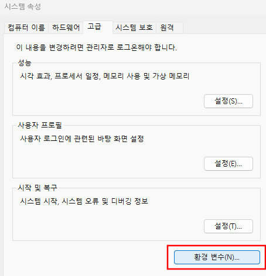
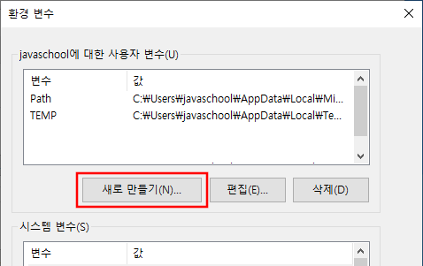
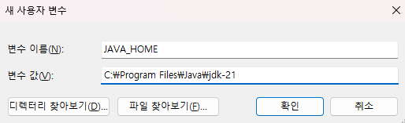
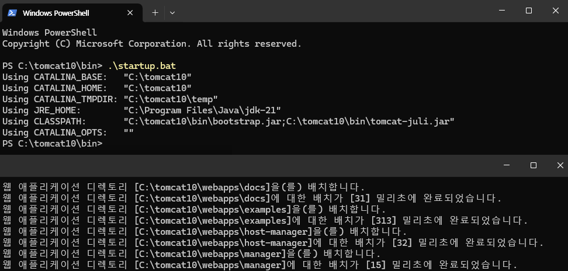

개발환경 준비
Java
https://www.oracle.com/java/technologies/downloads
페이지에서 최신 x64 Installer를 내려받습니다.

내려받은 파일을 실행하고, 다음 버튼을 계속 눌러 설치를 완료합니다.
설치 후, 시스템 - 고급 시스템 설정 - 환경 변수(N)...을 선택합니다.
사용자 변수에서 새로 만들기(N)... 버튼을 누르고,
자바 설치 폴더를 값으로 하는 환경 변수 JAVA_HOME을 생성합니다.



사용자 변수에서 Path를 선택하고, 편집(E)... 버튼을 누릅니다.
새로 만들기(N) 버튼을 누르고 %JAVA_HOME%\bin을 입력합니다.
사용자 변수 Path에 추가한 경로는 자동으로 시스템 변수 Path에 추가됩니다.
시스템 변수 Path를 확인하려면, 명령 프롬프트를 관리자 권한으로 실행하고 echo %PATH%를 실행합니다.
;로 구분된 경로에서 JDK의 bin 경로가 있는지 확인합니다.
C:\Windows\System32> echo %PATH% C:\Program Files\Common Files\Oracle\Java\javapath;C:\Windows\system32;C:\Windows;C:\Windows\System32\Wbem;C:\Windows\System32\WindowsPowerShell\v1.0\;C:\Windows\System32\OpenSSH\;C:\Program Files\Java\jdk-22\bin;
Maven
https://maven.apache.org/download.cgi
페이지에서 최신 버전의 바이너리 파일(Binary zip archive)을 내려받습니다.
압축을 풀고 생성된 폴더를 원하는 곳에 옮깁니다.
다음, 사용자 변수 Path에 메이븐 bin 경로를 추가합니다.
경로 추과 과정은 자바의 경우를 참고합니다. 자바처럼 MAVEN_HOME을 만들 필요는 없습니다.
명령 프롬프트를 열고, mvn -v를 실행하여 설치된 메이븐 버전을 확인합니다.
mvn -v
출력 화면에서, 설치한 자바 버전이 출력되는지 확인합니다.
Git
https://git-scm.com/download/win
페이지에서 64-bit Git for Windows Setup 파일을 내려받습니다.
파일 실행 후, 옵션은 모두 디폴트로 선택해 설치합니다.
명령 프롬프트에서 git --version을 실행해 설치된 깃 버전을 확인합니다.
git --version
아래를 참고해, 사용자 이름과 이메일을 설정합니다.
git config --global user.name "Gildong Hong" git config --global user.email hong@gmail.org
설정이 제대로인지 확인합니다.
git config --global --list
책 예제 소스를 관리하기 위해서 https://github.com 사이트에 가입합니다.
로그인 상태에서 윈도 버전의 gh를 설치합니다.
https://cli.github.com 페이지에서 Download for Windows 클릭하여 msi 파일을 내려받습니다.
설치 후, gh auth login을 실행합니다.
gh auth login
아래처럼 선택합니다.
? What account do you want to log into? GitHub.com ? What is your preferred protocol for Git operations? HTTPS ? Authenticate Git with your GitHub credentials? Yes ? How would you like to authenticate GitHub CLI? Login with a web browser
선택을 완료하면 원-타임 비밀번호가 출력에 추가됩니다.
! First copy your one-time code: one-time code - Press Enter to open github.com in your browser...

명령 프롬프트에 출력된 원타임 비밀번호를 복사하고 엔터를 치면, 웹 브라우저가 실행되고 비밀번호를 입력할 수 있는 페이지가 보입니다.
명령 프롬프트에 표시된 비밀번호를 페이지에 붙여 넣습니다.

다음 화면이 보이면 완료된 겁니다.

https://github.com 사이트에서 예제를 관리할 프로젝트를 만듭니다.
무료 계정도 private 프로젝트를 만들 수 있습니다.
책 예제인 만큼 public으로 프로젝트를 만듭니다.


https://www.toptal.com/developers/gitignore
사이트에서 .gitignore 파일을 만듭니다.
자바 프로젝트이므로 java를 입력하고 생성하면 기본적인 자바 프로젝트에서 사용할 .gitignore 파일을 만들 수 있습니다.
https://github.com 사이트에서 생성한 레포지터리를 클릭합니다. 웹 브라우저 주소창에서 주소를 복사한 후, 명령 프롬프트에 git clone 다음에 레포지터리 주소를 복사합니다. 레포지터리 이름이 jwp2samples라면 같은 이름이 폴더가 명령을 수행한 폴더에 서브 폴더로 생깁니다. cd jwp2samples로 이동한 후 README.md 파일을 열고 다음과 같이 작성합니다.
Java Web Programming 2 Samples ============================== ## A Bulletin Board Program with * Spring MVC * Spring Security * MyBatis Spring * Bean Validation * i18n * Thymeleaf ## How to run **mvn clean jetty:run**
깃허브 저장소에 변경된 내용을 반영합니다.
git add . -A git commit -m "first commit" git push
에제를 실행하면서 갱신된 내용이 있으면 위 과정을 실행합니다.
다른 곳이나 시스템에서 깃허브의 프로젝트의 내용을 따라가려면 다음을 실행합니다.
git fetch orign git reset --hard orgin/main
git 간편 안내서
https://rogerdudler.github.io/git-guide/index.ko.html
Vim
https://www.vim.org/download.php
페이지에서 gvim_9.1.0_x64_signed.exe (64bit installer)를 내려받고,
모든 옵션을 디폴트로 선택해 설치합니다.
Vim 설치 폴더(C:\Program Files\Vim\vim91)를 환경 변수 Path에 추가합니다.
vim 명령 대신 vi를 사용하려면, 명령 프롬프트에서 다음을 실행합니다.
Set-Alias vi vim
Vim을 설치하면 명령 프롬프트에서, 유닉스와 리눅스에서 사용했던, 몇몇 유용한 명령을 실행할 수 있습니다.
명령 프롬프트를 실행하고 ctrl 키와 r를 동시에 누릅니다.
-- 이후부터 이 작업을 ctrl + r이라 표현하겠습니다--
한 줄 아래에서 bck-i-search: 다음에 사용자 입력을 기다립니다.
PS C:\Users\javaschool> bck-i-search: _
문자를 입력할 때마다 문자가 포함된 명령 히스토리를 보여줍니다.
엔터를 치면 명령이 실행됩니다. 또는 esc 키를 눌러 명령을 수정할 수 있습니다.
git r만 치면, 명령 히스토리에서 찾아 git reset --hard origin/main을 보여줍니다.
git reset --hard origin/main bck-i-search: git r
엔터를 치면 git reset --hard orgin/main이 실행됩니다.
윈도에 Vim을 설치한 이유는 리눅스의 몇몇 유용한 명령을 사용할 수 있고 간단한 문서 편집 작업을 위해서입니다.
윈도에서 문서 작성에 Vim만 사용하는 건 리눅스에서와 달리 무리입니다.
전문적인 문서 편집을 위해선 Notepad++을 추천합니다.
https://notepad-plus-plus.org/downloads/
자바 소스 편집을 위한 IDE로는 이클립스를 추천합니다.
https://www.eclipse.org/
Oracle
Oracle Database 11gR2 Express Edition--Express Edition을 XE라고 줄여 쓴다-- 윈도에 오라클 11g XE 설치
https://www.oracle.com/database/technologies/xe-prior-release-downloads.html
위 사이트를 방문해, 자신의 윈도 시스템에 맞는 Oracle Database 11gR2 Express Edition을 내려받는다. 오라클 웹사이트의 회원이 아니면 회원 가입을 하고 로그인해야 내려받을 수 있다.
윈도는 오라클이 지원하는 운영체제이니 오라클이 쉽게 설치된다. 압축을 풀고 Disk1 디렉터리에서 setup.exe를 실행한 후, 다음 버튼을 계속 눌러 설치할 수 있다. 설치 과정에서 관리자 계정의 비밀번호는 기억해야 한다.
윈도의 경우 오라클 설치 과정에서 오라클 XDB의 디폴트 포트 8080을 변경할 수 없다. 설치 후 XDB의 8080 포트를 9090으로 바꾸는 방법은 다음과 같다.
C:\Users> sqlplus Enter user-name: system Enter password: Connected. SQL> Exec DBMS_XDB.SETHTTPPORT(9090); PL/SQL procedure successfully completed. SQL>
C:\Users> sqlplus Enter user-name: system Enter password: Connected. SQL> @C:\oraclexe\app\oracle\product\11.2.0\server\rdbms\admin\scott.sql SQL>
C:\User> sqlplus scott/tiger SQL>
Tomcat
https://tomcat.apache.org/download-10.cgi
페이지에서 10.1.xx 버전의 64-bit Windows zip을 내려받아 압축을 풀고,
생성된 폴더를 원하는 곳으로 옮깁니다.
폴더 이름 tomcat10처럼 쉬운 이름으로 바꿉니다. (예, C:\tomcat10)
bin 폴더에서 startup.bat를 실행하면 톰캣이 실행되고, shutdown.bat를 실행하면 종료됩니다.
C:\tomcat10\bin> .\startup.bat
startup.bat를 실행하면 새로운 명령 프롬프트창이 실행되면서 톰캣이 실행되는데, 이때 새 명령 프롬프트 창에서 글자가 깨져서 보입니다. 해결하려면, 톰캣 하위 폴더 conf/에서 logging.properties 파일을 열고 다음 줄의 인코딩 설정을 UTF-8 에서 EUC-KR로 변경합니다. 다음 실행부터 글자는 깨지지 않습니다.
java.util.logging.ConsoleHandler.encoding = EUC-KR

C:\tomcat10\bin> .\shutdown.bat
C:\tomcat10\bin> .\startup.bat
